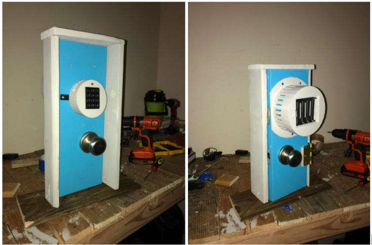

Smart Lock

Summary
With conventional locks being outdated, we explored a way to create a modernized smart lock. The smart lock is able to be unlocked via Google Assistant/Phone and with a keypad and also has an auto lock feature. This allows the lock to be accessed from different locaitons.
ImplementationFor this project, a scrum team management methodolody was used. Our sprints were divided up into 4 portions:
- 1st sprint
- Code keypad to lock and unlock solenoid
- Build breadboard circuit of lock
- Gather materials
- 2nd sprint
- Code connection to adafruit.io to allow actuations based off of data in an online feed
- Combine circuit and enclosure into final device
- 3rd Sprint
- Print back enclosure
- Test device runtime
- Add various features to previous adafruit code
- 4th Sprint
- Build demo door
- Finalize prototype
The smart lock surpassed our goal of 300 actuations, showcasing the useability of the device in a real world setting, allowing the operating time of the lock to be well over a month. The fabricated PCB allows safe and efficient power transmission to the door lock as opposed to protoboard. Heat dissipation from the voltage regulator is not an issue due to the vents located in the back enclosure. The smart lock can be unlocked by both Alexa and Google Assistant platforms using any smartphone linked to the lock’s IFTTT and adafruit.io account, as well as locally through the keypad. Data is kept of every unlock and lock, as well as attempted incorrect passwords for security reasons. Passwords can be changed using the pound button on the keypad. Once the device gets close to 300 actuations the keypad will start blinking to denote it is time to charge the batteries.
 Major Tools/Components Used
Major Tools/Components Used
- EagleCAD
- ESP32 Microcontroller
- Adafruit Matrix Keypad
- Lock-style Solenoid
- Arduino IDE